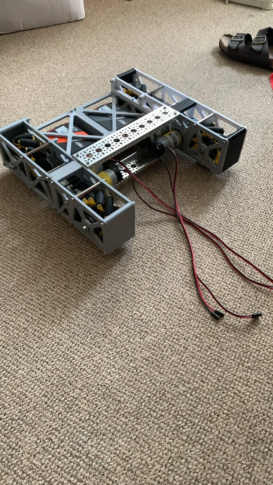
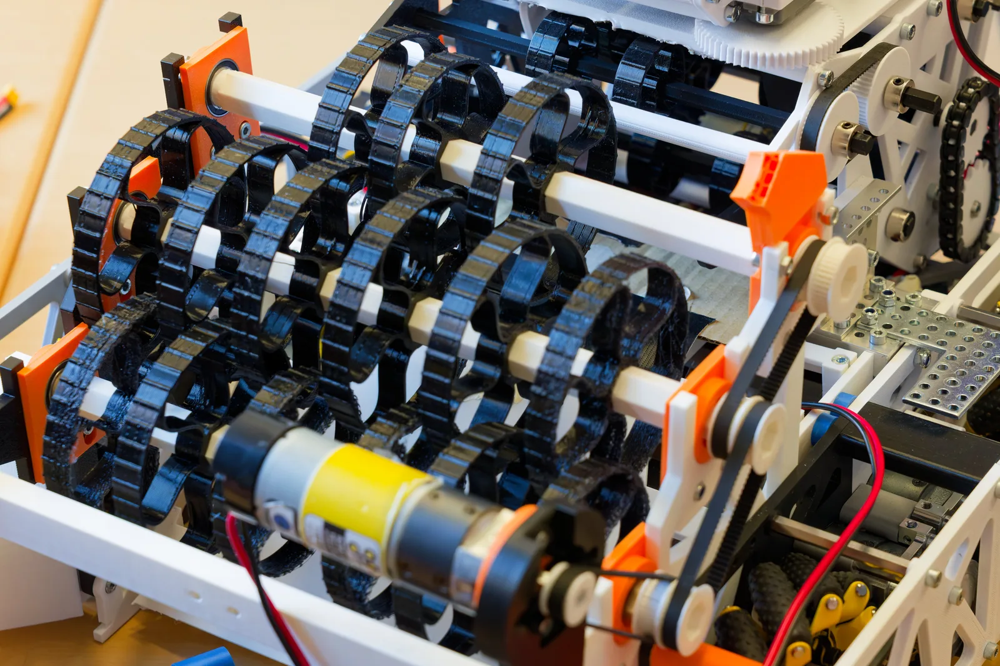
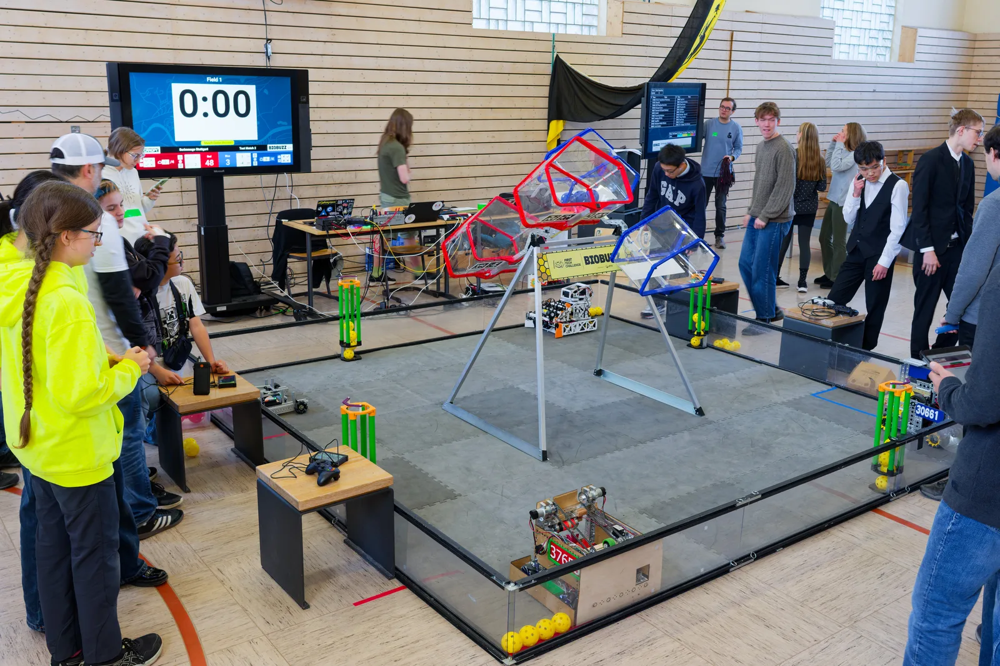
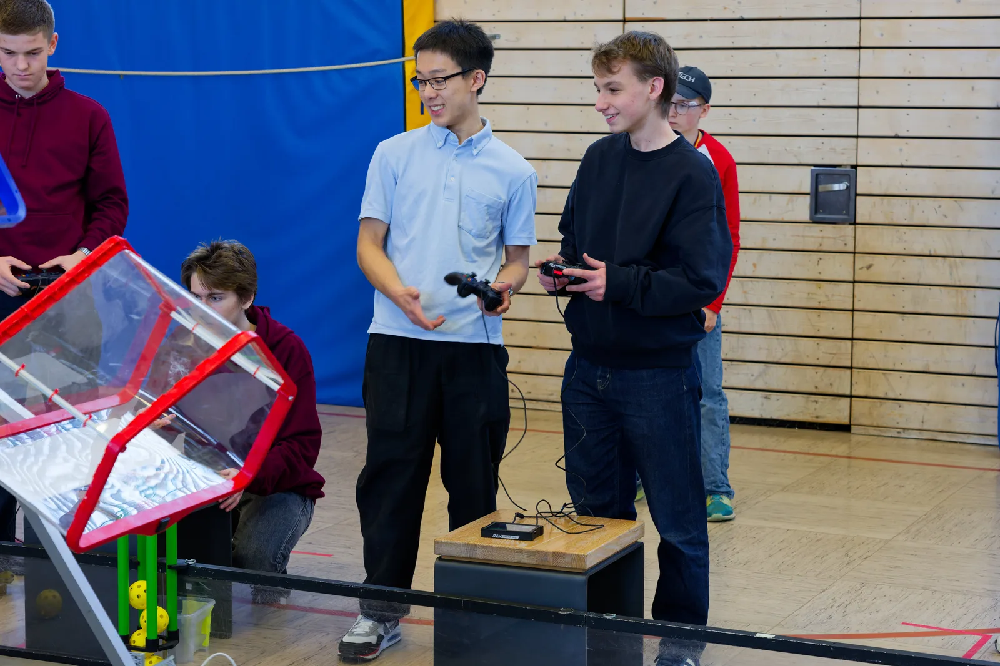
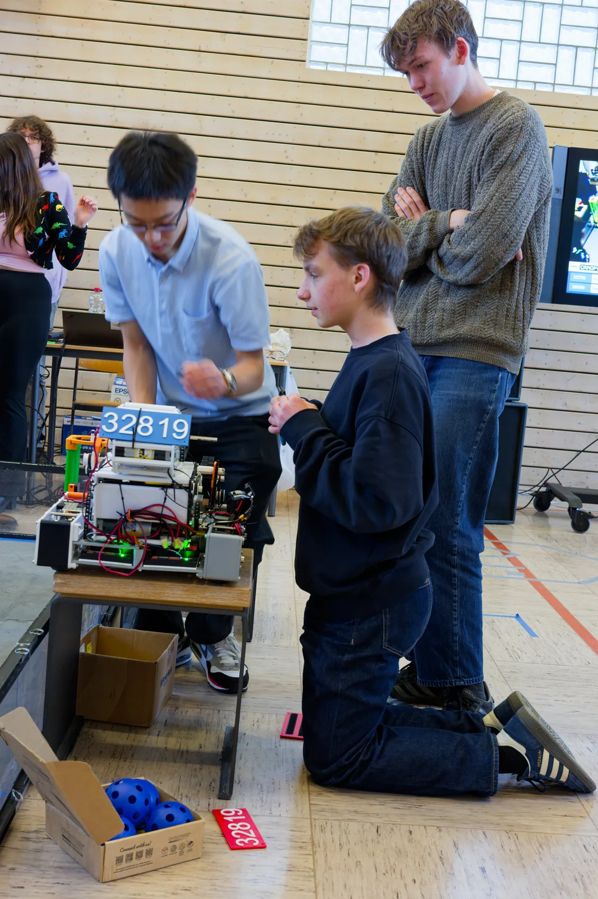

Ready for Your Robot .GLB Model
Drop a .glb (or .gltf / .obj) file right here or pick one from your computer to inspect now, or upload your exported binary glTF model to:
/assets/models/decode-bot.glb
Design Lifecycle
The Engineering Path
Our journey followed a rigorous iterative loop: Strategize, Build, and Optimize. We moved from "Cardboard & Duct Tape" to a 90% 3D-printed chassis.
- Prototyping: Validated physics using low-fidelity models.
- CAD Iteration: Full 3D assembly to eliminate spatial interference.
- Manufacturing: 3D printing for high-precision DIY parts.
- Iteration Logs: Documented mechanical evolutions from V1.0 to V3.0.
Variable-Pitch Intake
Our intake utilizes a high-friction, compliant wheel system mounted on a pivoting arm, ensuring consistent torque delivery via dual-chain synchronization.
- Active Grip: High-grip rubber Lego wheels.
- Power: 3.7k RPM Motor geared for high-speed acquisition.
- Transmission: Dual-chain drive to isolate motor weight.
"Design Note: Lego rubber provides the 'squish' needed for irregular tolerances."
Tri-Chamber Indexer
The heart of our efficiency. We moved away from a generic hopper to a segmented "clover" geometry for jam-free, high-cadence firing.
- Indexable Flicker: Sub-0.5s reset time.
- Pyramid Core: Passive 3D-printed diverter for artifact seating.
- Kinetic Sorting: Forces incoming balls into locked positions.
360° Precision Turret
To achieve a low-profile solution, we engineered a custom DIY "Sandwich" bearing stack, embedding rotation gears directly into the plates.
- V3 Finalist: Minimal footprint with centered axis.
- Integrated Hood: Real-time trajectory control (Pitch).
- Weight Savings: Custom stack is lighter than commercial alternatives.
Control Systems
Sensor Fusion & Logic
Our software architecture overcomes hardware limitations through advanced computer vision and mathematical localization. We treat the robot as an autonomous agent that understands its position relative to field goals.
- Triple-Disc Odometry: We solve for the robot's pose (x, y, θ) in real-time using free-spinning wheels with high-resolution encoders.
- Chamber-Vision: A single camera uses OpenCV Color Filtering to monitor the Average Hue of internal slots, identifying ball patterns.
Autonomous Targeting
Using a dedicated high-speed Mono camera, the system performs AprilTag Localization to select the required ball sequence and adjust the hood pitch automatically.
The Pattern Auto-Burst logic re-indexes the chamber based on color-filter data, firing only when the correct color aligns with the Flicker. This removes all human error from the scoring process.
BIOBUZZ Bot · 2026/2027
01. Architecture & Active Iteration
Built for the 2026/2027 FIRST® CANOPY™: BIOBUZZ season and first field-tested at Scrimmage Stuttgart. With the core chassis, multi-row TPU intake, dual-sided transfer, and BB-bearing turret running, we are actively iterating on the next wave of upgrades:
- Two Ball Sizes (In Progress): Refining intake, transfer, and shooter geometry to handle both Nectar and Pollen elements smoothly despite their size difference.
- No Backspin Flywheel: Early testing showed backspin flywheels cause balls to bounce back out after entering the goal every time—so we eliminated backspin completely.
- Flower Extraction (In Progress): Designing and adding a dedicated mechanism to pull pollen and nectar cleanly out of field flowers.

02. Custom 3D-Printed Drivetrain
Built for maximum packaging efficiency and wide-open intake clearance: both left and right Mecanum drive pods are fully 3D-printed, internally braced with metal standoffs, and rigidly joined across the chassis by an aluminum goBILDA frame.
- Dual-Pod Construction: Left and right sides are 3D-printed with truss lightening and reinforced internally using metal standoffs connecting inner and outer plates.
- Aluminum Cross-Brace: Rigid aluminum goBILDA channel ties both 3D-printed pods together and mounts the rear drive motors cleanly out of the front bay.
- Belt & Pulley Drive: Timing belts and pulleys inside each pod deliver reliable, low-backlash power transfer compared to direct bevel/spur setups.
- Maximized Intake & Compact Electronics: Pods sit as wide as possible to open up full front intake width, while REV electronics tuck flat into a compact center-rear tray.
03. Multi-Row TPU Intake & Transfer
Rather than relying on off-the-shelf compliant wheels, we print our own flexible TPU wheels in-house so we can adapt wheel diameter, spoke flex, and surface grip directly to BIOBUZZ game pieces.
- In-House 3D-Printed TPU Wheels: Flexible TPU lets the wheels compress around incoming elements while allowing instant size tuning via CAD and 3D printing.
- Belt-Driven Multi-Row Contact: Multiple belt-driven wheel rows maintain continuous contact with each ball across the ramp so elements never stall mid-intake.
- Dual-Sided Spur Transfer: Small TPU rollers guide balls from the intake ramp edge up into the turret, using a drive motor and an extra spur gear to reverse rotation so both sides push pollen upward together.


04. Compact BB Turret & Rear-Roller Shooter
To stay compact above the transfer without sacrificing aiming coverage, the entire turret rotates on a custom BB-pellet bearing track with servos mounted directly onto the turret assembly itself.
- BB-Pellet Rotary Ring: Uses BB pellets inside a custom 3D-printed raceway for a super-compact, low-height turret footprint.
- Turret-Mounted Dual Servos: Mounting servos directly on the turret saves chassis space—one servo drives turret rotation while the second blocks the ball and meters shooting cycle speed.
- Rear Rollers (No Backspin): Launching rollers sit on the back of the turret to propel elements cleanly without backspin, preventing bounce-outs inside the goal.
Scrimmage Testing & Control · BIOBUZZ
05. Field Validation & Control Systems
Live matches at Scrimmage Stuttgart validated the core mechanical platform and highlighted the exact software and mechanism refinements needed before regional qualifiers.
- TeleOp Cycle Control: Synchronizing intake, dual-sided transfer speed, and the turret’s ball-blocking gate servo for consistent rapid scoring.
- Dual-Size Tuning (In Progress): Calibrating roller clearances and gate timing across both Nectar and Pollen ball diameters.
- Autonomous & Flower Routines (In Progress): Building localization paths and vision alignment tailored for BIOBUZZ hive, flower, and field goals.

Scrimmage Stuttgart in Action
Early match testing, driver coordination, and rapid between-match electronics checks on our 2026/2027 BIOBUZZ prototype.


